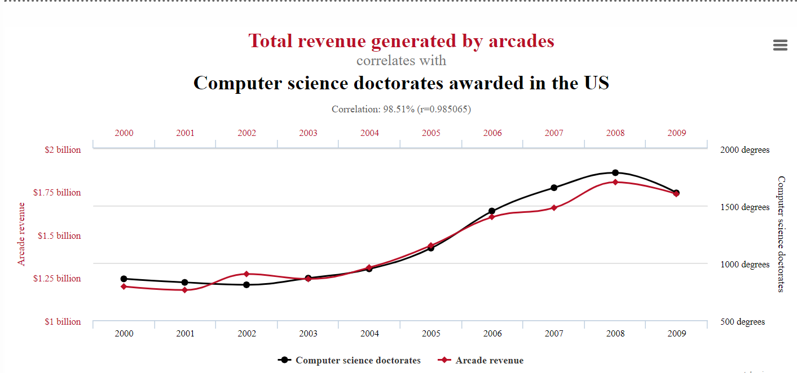

What is subjective and what is not?
Something is subjective if it depends on someone's feelings or it is biased. Whilst something is considered objective, if it is unbiased, and no feelings will change what it is.

Often times something subjective tries to be displayed as if it is objective, such as opinions being twisted so it appears factual. For example, someone who thinks covid is fake, may go round convincing others that it factual, therefore the subjective opinion of that person is being manipulated to come of as objective and is the factual truth.
Facts conversly can be twisted/manipulated to form a subjective opinion, for example a correlation can be formed from looking at an objective graph, that may not have anything to do with each other see below.
This graph could be maniuplated into an objective fact, that the more arcades generate in revenue will mean more Docterate degrees will be awarded to US citezens. Another way objective facts can be manipulated is sample bias where certain data is recorded but not at random, so it will make something look objective when it isn't.